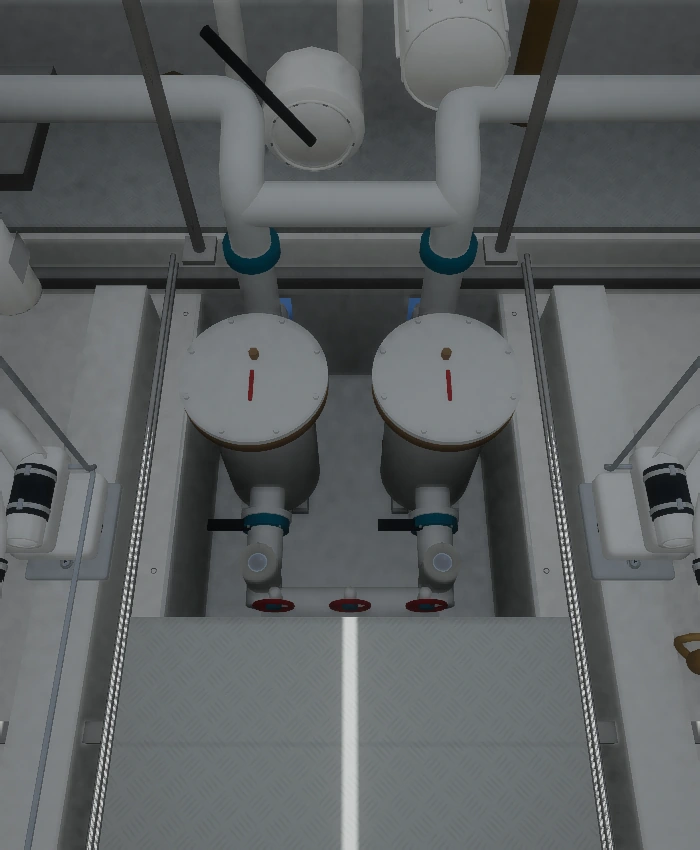
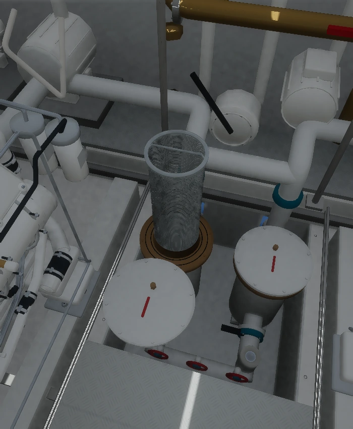
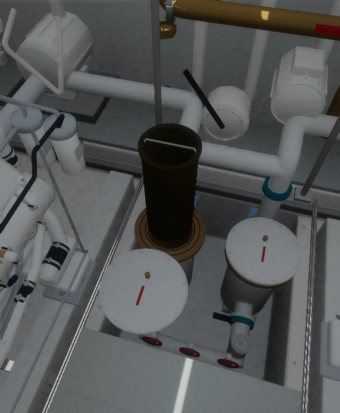

LUZ DE MAR · CUARTO DE MÁQUINASLos filtros de agua de mar
Dos carcasas blancas alojan cestos perforados extraíbles en el foso central, entre los motores. La reconstrucción sigue el video del propietario y sus fotografías de mantenimiento.
Entrar al cuarto de máquinas
Dentro del cuarto pulsa K, elige Filtros de mar y abre el registro del piso. Puedes abrir la tapa, extraer el cesto y comparar las vistas limpia y sucia.
Qué está documentado. La disposición y los elementos visibles se apoyan en las imágenes. Las medidas y los encuentros ocultos son ajustes estimados; el fabricante y modelo exactos permanecen sin identificar. La suciedad ilustra una fotografía de referencia y no el estado actual del barco.
Montaje y acceso

Captura de la escena final. El suelo se repone al finalizar la inspección.

Cesto limpio · geometría del modelo
Incrustación de referencia · estado ilustrativoCuándo revisarlo, limpiarlo o cambiarlo
| Tarea | Criterio |
|---|
| Revisar | Diariamente antes del arranque como orientación general; aumentar la vigilancia en agua con residuos. |
| Limpiar | Según la acumulación, obstrucción y manual del conjunto. El cesto se limpia y reutiliza. |
| Sustituir | Evaluar roturas, corrosión, deformación y daño en el asiento o las juntas. No se ha documentado un intervalo fijo para el equipo instalado. |
La revisión diaria está documentada en el manual VETUS, página 25; la limpieza y revisión de juntas aparecen en las instrucciones de Guidi y GROCO. Son referencias generales: no identifican la marca ni establecen el programa específico de Luz de Mar.
Una intervención real exige detener e identificar los equipos atendidos, aislar las tomas antes de abrir y verificar el cierre y la estanqueidad antes de restablecer el servicio. El par no se ha acreditado como sistema dúplex para limpiar en marcha.
Modelo de Blender
Descargar el modelo .blend, herramientas y documentación. Incluye una escena de la pieza y otra con ambos conjuntos instalados en su contexto digital.
Fuentes y límites
Informe completo: fuentes, dimensiones, ubicación, circuitos y supuestos · Registro de Blender · Verificación de las poses · Registro de entrega
3.321 fotogramas cubiertos en la revisión temporal; detalles examinados a resolución original. Los originales, el audio y las fotografías del propietario permanecen privados. No es un plano de fabricación ni una simulación hidráulica.